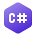

Coaty
Olá esse é o meu site e ele tem o proposito de praticar e compartilhar meus projetos
Sobre mim
Me chamo Kelvin Moraes Souza, sou estudande de Engenharia de Software e tenho 22 anos. Atualmente estou estudando front-end pelo programa da Ford <Enter> e back-end por conta, com alguns cursos na Alura, Youtube e bastante interesse pessoal.
Além disso sempre fui apaixonado por criação de vídeos, hoje um dos meus maiores hobbies é produzir meus vídeos pessoais para o Youtube sobre jogos, dai veio o nick "Coaty". Também acabo utilizando desse conhecimento profissionalmente como freelancer, oferecendo serviços de edição de vídeos.

Conhecimentos
Estou estudando para ser um desenvolvedor fullstack, meu maior foco no momento é o curso Ford <Enter> aonde estou na primeira etapa que é o front-end, nela estou vendo lógica de programação, html, css, git, javaScript e Angular. Ao finalizar essa primeira etapa os alunos que se destacam seguem para a próxima que é a de back-end, essa é minha meta principal no momento.
Além disso venho estudando C# para me tornar um desenvolvedor .Net, aproveitei que já tinha certa familiaridade com a linguagem e que é a mesma que será utiliza-da na proxima etapa do curso (back-end), sendo assim me adiantei para estudar desde já.
Front-End:
Back-End:
